1072B50 sleeves connecting air capacity box to inlet manifold is - r+r
- Path
- Procedures > 10 ENGINE > 1072 INLET AND EXHAUST MANIFOLDS > 1072B inlet manifolds > 1072B50 sleeves connecting air capacity box to inlet manifold is - r+r
- Kind
- repair procedure (removal / refitting; the operation number is the code)
- Applies to
- engines: 1.4 8v, 1.6 16v, 1.3 JTD 16V, 1.9 JTD 8V; all production periods
- Interactive page
- https://sloeber94.github.io/elrnDB-fDbl/en/#/2584364
Applies to: engines: 1.6 16v; all production periods
 Removing
Removing
 Refitting
RefittingPlace the car on the ramp.
Disconnect the battery negative terminal.
 | Name | Connector |
|---|---|---|
- | Battery |
Op. 1048A32 HOSE FROM AIR FILTER TO INTAKE MANIFOLD - R.R.
-Release fuel pressure through device attached to the valve at the end of the single fuel manifold pipe.
 | Name | Country |
|---|---|---|
- | Rapid connector | 1.870.684.000 |
1. Release the fuel supply pipe (1a), open retaining band (1b) and release the underlying pipes (1c).
2. Disconnect the electrical connection (2a) from the fuel vapour recovery solenoid. Disconnect the electrical connection (2b)from the air temperature and pressure sensor.
| Name | Connector |
|---|---|---|
2a | Fuel vapour recovery solenoid |
| Name | Connector |
|---|---|---|
2b | Integrated air temperature sensor |
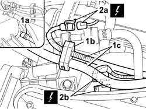
Applies to: engines: 1.6 16v; all production periods
1. Disconnect fuel vapour recover pipe (1a) and oil vapour recovery pipe (1b) from the intake chamber.
2. Disconnect electrical connection (2a) from the throttle body actuator and move the lambda sensor electrical connection (2b) aside from the throttle body.
| Name | Connector |
|---|---|---|
2a | Integrated throttle body actuator |
3. Open bands (3a) and release wiring loom/pipes (3b).
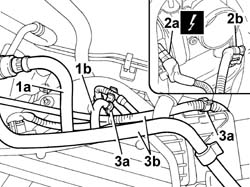
Applies to: engines: 1.6 16v; all production periods
1. Disconnect the electrical connector (1a) and remove the ignition coil/reels (1b).
| Name | Connector |
|---|---|---|
1a | Ignition 'coil |
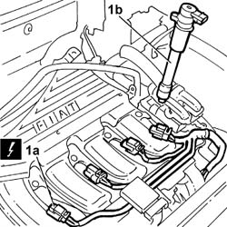
Applies to: engines: 1.6 16v; all production periods
1. Undo the nut (1a) and the bolt (1b) and remove the protection (1c).
2. Undo the nut (2a) and remove the injector wiring support (2b).
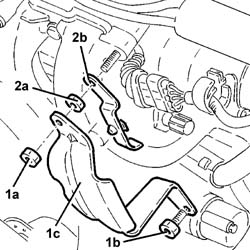
Applies to: engines: 1.6 16v; all production periods
1. Undo the bolts (1a) and (1b) and remove the air chamber (1c).
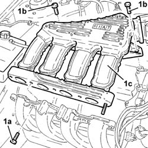
Applies to: engines: 1.6 16v; all production periods
Refitting
RemovingPlace the air chamber back in its housing and secure it by tightening the bolts to the specified torque.
 | Fastening | Component | Ø | Value (daNm) |
|---|---|---|---|---|
- | Bolt | INLET AIR DUCT | M7 | (Cylinder head side) 1.5 |
Place the injector wiring support back in its housing and fix it using the nut.
Place the protection back in its housing and secure it using the nut and bolt.
Refit the high tension leads and secure them to the seats on the chamber
Fit the ignition coils/reels and connect the supply leads.
| Name | Connector |
|---|---|---|
- | Ignition 'coil |
Refit the wiring loom/pipes and do up the retaining clips.
Connect the electrical connection to the throttle body actuator, then position the lambda sensor connection in its seat on the throttle body.
| Name | Connector |
|---|---|---|
- | Integrated throttle body actuator |
Connect the fuel vapour recovery pipe and oil vapour recovery pipe to the air chamber.
Connect the electrical connection to the air temperature and pressure sensor.
| Name | Connector |
|---|---|---|
- | Integrated air temperature sensor |
Connect the electrical connection from the fuel vapour recovery solenoid.
| Name | Connector |
|---|---|---|
- | Fuel vapour recovery solenoid |
Connect the fuel supply pipe, then do up the band securing the pipe to the air chamber.
Connect the battery negative terminal.
| Name | Connector |
|---|---|---|
- | Battery |
Op. 1048A32 HOSE FROM AIR FILTER TO INTAKE MANIFOLD - R.R.
Remove the car from the ramps.
Applies to: engines: 1.3 JTD 16V; all production periods
Removing
RefittingPosition the car on the ramp.
Ensure that the ignition key is in the OFF position, then disconnect the negative battery terminal.
Name | Connector | |
|---|---|---|
- | Battery |
Carry out
Carry out
Op. 5530B52 BATTERY SUPPORT/DRIP TRAY - R.R..
Carry out
Op. 7055B54 PROTECTION/GUARD UNDER ENGINE - R.R..
Carry out
Op. 1080C82 E.G.R. - VALVE HEAT EXCHANGER ASSEMBLY - CONNECTOR PIPES - R.R..
1. Undo the bolts (1a), loosen the band and disconnect the oil vapour recovery pipe between the rigid pipe and separator (1b), separator side.
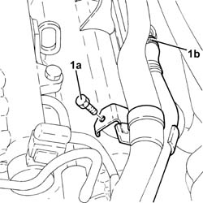
Applies to: engines: 1.3 JTD 16V; all production periods
1. Undo the bolts (1a) and disconnect the connector (1b) of the engine oil vapour recovery pipe from the timing cover.
2. Undo the bolt (2a) and remove the complete engine oil dipstick pipe (2b).
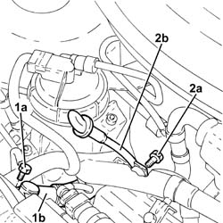
Applies to: engines: 1.3 JTD 16V; all production periods
1. Loosen the band and disconnect the engine oil vapour recovery pipe, separator side.
2. Undo the bolts (2a) and remove the engine oil vapour separator (2b), complete with engine oil vapour recovery pipe (2c).
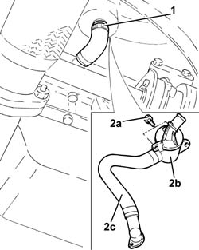
Applies to: engines: 1.3 JTD 16V; all production periods
1. Disconnect the electrical connection from the excess pressure sensor.
| Name | Connector |
|---|---|---|
1 | Turbocharging sensor |
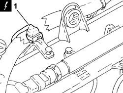
Applies to: engines: 1.3 JTD 16V; all production periods
Release the electrical wiring from the bands on the air chamber.
1. Undo the bolts (1a) and remove the air chamber (1b) complete with gasket (1c) and over-pressure sensor.
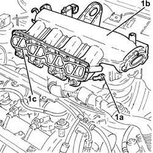
Applies to: engines: 1.3 JTD 16V; all production periods
Refitting
Removing1. Refit the air chamber (1a) in its seating, complete with gasket (1b) and over-pressure sensor, then secure it with its bolts (1c) to the specified torque.
| Fastening | Component | Ø | Value (daNm) |
|---|---|---|---|---|
1c | Bolt | INLET AIR DUCT | M8 | (Cylinder head side) 2.3 ÷ 2.8 |
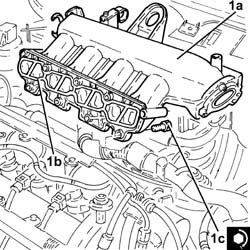
Applies to: engines: 1.3 JTD 16V; all production periods
Secure the electrical wiring with the bands to the air chamber.
Connect the electrical connection to the intake air temperature sensor.
| Name | Connector |
|---|---|---|
- | Turbocharging sensor |
Refit in its seating the oil vapour separator complete with oil vapour recovery pipe and secure it with its bolts.
Connect the engine oil recovery pipe, separator side, and tighten the band.
Place the engine oil dipstick tube in its seating and fix it using the bolt.
Connect the engine oil vapour recovery pipe connector to the timing cover and tighten the bolts.
Connect the oil vapour recovery pipe between the rigid pipe and separator, separator side, then tighten the band and the bolts.
Carry out
Op. 1080C82 E.G.R. - VALVE HEAT EXCHANGER ASSEMBLY - CONNECTOR PIPES - R.R..
Carry out
Op. 5530B52 BATTERY SUPPORT/DRIP TRAY - R.R..
Carry out
Connect the battery negative terminal.
| Name | Connector |
|---|---|---|
- | Battery |
Refill the engine cooling system with coolant
Op. 0010T20 ENGINE COOLANT - CHANGE.
Carry out
Op. 7055B54 PROTECTION/GUARD UNDER ENGINE - R.R..
Remove the car from the ramps.
Applies to: engines: 1.9 JTD 8V; all production periods
Removing
RefittingProceed with the removal
Proceed with the removal
Op. 5530B52 BATTERY SUPPORT/DRIP TRAY - R.R..
Proceed with the removal
Op. 4450B12 FRONT WHEELS (TWO) - R.R..
Proceed with the removal
Op. 1044B10 FUEL FILTER ASSEMBLY - R + R OR REPLACE.
Proceed with the removal
Op. 7210E22 R.R. WINDSCREEN BASE TRIM.
Proceed with the removal
Op. 7055B54 PROTECTION/GUARD UNDER ENGINE - R.R..
Proceed with the removal
Op. 7210E10 R.R. FRONT BUMPER.
Drain the air conditioning system
Op. 5040A10 AIR CONDITIONING REFRIGERANT CIRCUIT - DRYING AND REPRESSURIZING.
Proceed with the removal
Op. 4130B10 POWER STEERING FLUID RESEVOIR - R.R..
Proceed with the removal
Op. 1088B10 ENGINE COOLING SUPPLY RESERVOIR - R.R..
Proceed with the removal
Op. 1004B10 POWER UNIT WITH MANUAL GEARBOX - R + R.
Proceed with the removal
Op. 1060E40 PRESSURE PUMP MOUNTING - R.R..
1. Disconnect the electrical connection from the excess pressure sensor.
| Name | Connector |
|---|---|---|
1 | Turbocharging sensor |
2. Disconnect the electrical connection from the E.G.R. valve.
| Name | Connector |
|---|---|---|
2 | EGR solenoid |
3. Disconnect the electrical connection from the fuel pressure sensor.
| Name | Connector |
|---|---|---|
3 | Fuel pressure sensor |
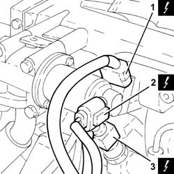
Applies to: engines: 1.9 JTD 8V; all production periods
1. Undo the nuts (1a) and remove the vacuum reservoir (1b) complete with solenoid valve (1c) and pipes.
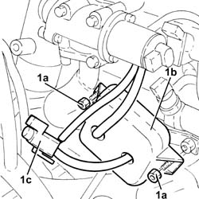
Applies to: engines: 1.9 JTD 8V; all production periods
1. Loosen the band and disconnect the oil vapour recovery pipe from the tappet cover.
2. Undo the bolts securing the electropneumatic throttle body.
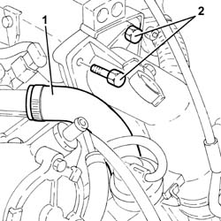
Applies to: engines: 1.9 JTD 8V; all production periods
1. Undo nuts (1a) and remove bracket (1b).
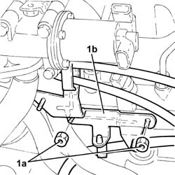
Applies to: engines: 1.9 JTD 8V; all production periods
1. Tighten the bolts fixing the water/exhaust gas heat exchanger for the E.G.R. system.
2. Undo the bolts (2a) and remove EGR solenoid (2b) complete with electropneumatic throttle body (2c) and pipe (2d).
3. Remove the gaskets.
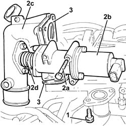
Applies to: engines: 1.9 JTD 8V; all production periods
1. Disconnect the electrical connections from the injectors and move the wiring aside.
| Name | Connector |
|---|---|---|
1 | Injector |
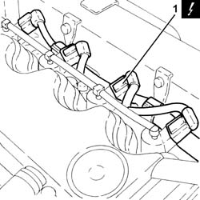
Applies to: engines: 1.9 JTD 8V; all production periods
1. Undo the connectors for the pipes from the fuel manifold to the injectors (1a), fuel manifold side, using tool (1b).
| Name | Country |
|---|---|---|
1b | Key | 1.870.671.000 |
2. Undo the connectors for the pipes from the fuel manifold to the injectors, injector side, using a commercial wrench.
3. Remove the pipes from the fuel manifold to the injectors.
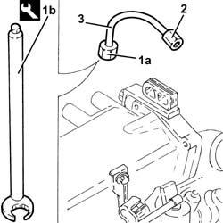
Applies to: engines: 1.9 JTD 8V; all production periods
1. Undo the bolts (1a) and remove the single fuel manifold pipe (1b), complete with fuel pressure sensor (1c).
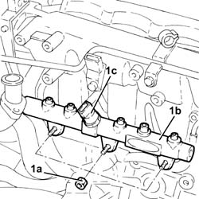
Applies to: engines: 1.9 JTD 8V; all production periods
1. Disconnect the electrical connections for the glow plugs.
| Name | Connector |
|---|---|---|
1 | Heater plugs |
2. Undo and remove the glow plugs.
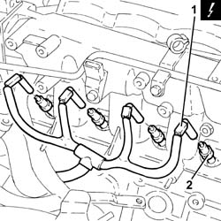
Applies to: engines: 1.9 JTD 8V; all production periods
1. Move the coolant return pipe to the coolant reservoir (1a) aside after disconnecting pipe (1b) and unscrewing the fastenings.
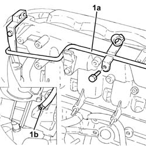
Applies to: engines: 1.9 JTD 8V; all production periods
1. Undo the bolt (1a) and the nut (1b), then move the EGR water/exhaust gas heat exchanger (1c) away from the air chamber.
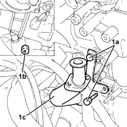
Applies to: engines: 1.9 JTD 8V; all production periods
1. Undo the bolts (1a) and remove the air chamber (1b).
2. Remove the gasket.
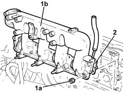
Applies to: engines: 1.9 JTD 8V; all production periods
Refitting
Removing1. Refit air chamber (1a) complete with gasket (1b) and secure it by tightening nuts (1c) to the recommended torque.
| Fastening | Component | Ø | Value (daNm) |
|---|---|---|---|---|
1c | Nut | INLET AIR DUCT | M8 | (Cylinder head side) 2.3 ÷ 2.8 |
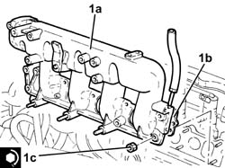
Applies to: engines: 1.9 JTD 8V; all production periods
Place the water/exhaust gas heat exchanger for the E.G.R. system back in its housing and secure it with the nut and bolts.
Place the coolant return pipe to the engine cooling system reservoir back in its housing, secure and connect the pipe .
1. Place the glow plugs back in their housings and tighten them to the recommended torque.
| Fastening | Component | Ø | Value (daNm) |
|---|---|---|---|---|
1 | - | GLOW PLUGS | M12 | (Cylinder head side) 1.4 ÷ 1.7 |
2. Connect the electrical connections for the glow plugs.
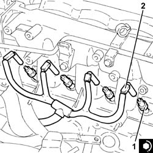
Applies to: engines: 1.9 JTD 8V; all production periods
Place the fuel return manifold pipe and fuel pressure sensor back in its housing and secure it using the nuts.
1. Fit all the pipes from the fuel manifold to the injectors and secure them using the connectors without tightening them.
2. Undo the connectors for the pipes from the fuel manifold to the injectors, injector side, using a suitable spanner.
| Fastening | Component | Ø | Value (daNm) |
|---|---|---|---|---|
2 | Connector | FUEL MANIFOLD LINE TO INJECTORS | M12 | (Injector side) 2.2 ÷ 2.4 |
3. Tighten the connectors for the pipes from the fuel manifold to the manifold side injectors (3a) to the recommended torque using tool (3b).
| Fastening | Component | Ø | Value (daNm) |
|---|---|---|---|---|
3a | Connector | FUEL MANIFOLD LINE TO INJECTORS | M14 | (Fuel manifold side) 2.2 ÷ 2.4 |
| Name | Country |
|---|---|---|
3b | Key | 1.870.671.000 |
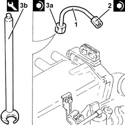
Applies to: engines: 1.9 JTD 8V; all production periods
Place the electrical wiring back in its housing and connect the electrical connections to the injectors.
1. Refit EGR system solenoid (1a) with electropneumatic throttle body (1b), pipe (1c) and gaskets (1d) and secure with bolts (1e).
2. Tighten the bolts fixing the water/exhaust gas heat exchanger for the E.G.R. system .
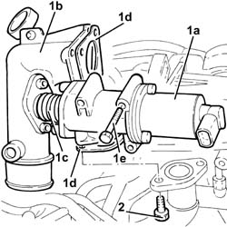
Applies to: engines: 1.9 JTD 8V; all production periods
Place the bracket back in its housing and secure it using the nuts.
1. Tighten the bolts securing the electropneumatic throttle body to the specified torque.
| Fastening | Component | Ø | Value (daNm) |
|---|---|---|---|---|
1 | - | - | - | - |
2. Connect the oil vapour recovery pipe to the cam cover and secure with a band.
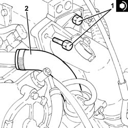
Applies to: engines: 1.9 JTD 8V; all production periods
Refit the vacuum tank complete with solenoid and secure with bolts.
Connect the electrical connection to the fuel pressure sensor.
Connect the electrical connection to the E.G.R. valve.
Proceed with the refitting
Op. 1060E40 PRESSURE PUMP MOUNTING - R.R..
Proceed with the refitting
Op. 1004B10 POWER UNIT WITH MANUAL GEARBOX - R + R.
Proceed with the refitting
Op. 1088B10 ENGINE COOLING SUPPLY RESERVOIR - R.R..
Proceed with the refitting
Op. 4130B10 POWER STEERING FLUID RESEVOIR - R.R..
Refill the air conditioning system
Op. 5040A10 AIR CONDITIONING REFRIGERANT CIRCUIT - DRYING AND REPRESSURIZING.
Proceed with the refitting
Op. 7210E10 R.R. FRONT BUMPER.
Proceed with the refitting
Op. 7055B54 PROTECTION/GUARD UNDER ENGINE - R.R..
Proceed with the refitting
Op. 7210E22 R.R. WINDSCREEN BASE TRIM.
Proceed with the refitting
Op. 1044B10 FUEL FILTER ASSEMBLY - R + R OR REPLACE.
Proceed with the refitting
Op. 4450B12 FRONT WHEELS (TWO) - R.R..
Proceed with the refitting
Op. 5530B52 BATTERY SUPPORT/DRIP TRAY - R.R..
Proceed with the refitting
Applies to: engines: 1.4 8v; all production periods
Removing
Refitting- Disconnect the negative battery terminal.
Op. 1048A10 AIR FILTER ASSEMBLY - R.R.
Op. 1056B60 SINGLE FUEL MANIFOLD PIPE, WITH INJECTORS - R + R
Op. 1056B54 INTAKE AIR PRESSURE/TEMPERATURE SENSOR - R.R.
Op. 1056B44 AIR PRESSURE SENSOR - R + R
Op. 1056B14 THROTTLE CASE - R + R
1. Connect the electrical connection to the fuel vapour solenoid valve.
Description | Connector | |
|---|---|---|
1 | Fuel vapour recovery solenoid valve |
2. Loosen the collar and disconnect the vacuum pipe from the brake servo.
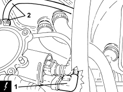
Applies to: engines: 1.4 8v; all production periods
1. Disconnect the intermediate rapid connector for the fuel vapour pipe.
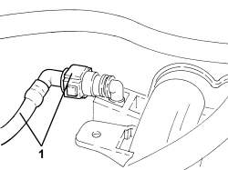
Applies to: engines: 1.4 8v; all production periods
1. Disconnect the electrical connections for the spark plugs.
Description | Connector | |
|---|---|---|
1 | Ignition coil |
2. Undo fastenings (2a) and remove air capacity chamber (2b).
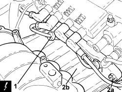
Applies to: engines: 1.4 8v; all production periods
1. Loosen clip (1a) and remove the fuel vapour solenoid (1b) with pipe.
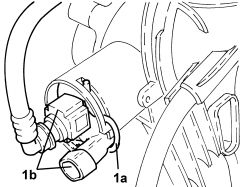
Applies to: engines: 1.4 8v; all production periods
Refitting
Removing- Refit the fuel vapour solenoid with pipe.
- Replace the intake manifold in its housing and secure it by tightening the fastenings to the recommended torque.
- Connect the electrical connections for the spark plugs.
- Connect the intermediate rapid connector for the fuel vapour pipe.
- Connect the vacuum pipe for the brake servo.
- Connect the electrical connection to the fuel vapour solenoid valve.
Op. 1056B14 THROTTLE CASE - R + R
Op. 1056B44 AIR PRESSURE SENSOR - R + R
Op. 1056B54 INTAKE AIR PRESSURE/TEMPERATURE SENSOR - R.R.
Op. 1056B60 SINGLE FUEL MANIFOLD PIPE, WITH INJECTORS - R + R
Op. 1048A10 AIR FILTER ASSEMBLY - R.R.
- Connect the negative battery terminal.
Topics linked from this page (33)
- 0010T20 coolant change
- 1004B10 POWER UNIT WITH MANUAL GEARBOX - R.R
- 1044B10 fuel filter assembly - r + r or replace
- 1048A10 air cleaner filtering element - replace
- 1048A32 sleeve from air cleaner to intake manifold - r + r
- 1056B14 THROTTLE CASE - R + R
- 1056B44 AIR PRESSURE SENSOR - R + R
- 1056B54 intake air pressure/temperature sensor - r r
- 1056B60 single fuel manifold pipe, with injectors - r + r
- 1060E40 supplementary pressure pump - r r
- 1080C82 E.G.R. - VALVE HEAT EXCHANGER ASSEMBLY - Connector PIPES - R.R.
- 1088B10 engine cooling tank - r + r
- 4130B10 power steering fluid resevoir r r
- 4450B12 front or rear wheels (two) - r+r
- 5040A10 Air conditioning refrigerant CIRCUIT - Draining and Refilling
- 5530B10 battery - r+r
- 5530B52 Battery DRIP TRAY/SUPPORT - R.R.
- 7055B54 under-engine guard - r r
- 7210E10 R.R. FRONT BUMPER
- 7210E22 R.R. WINDSCREEN BASE TRIM
- A001 BATTERY
- A1H BATTERY ( ENGINE )
- A030 IGNITION COIL
- A30 IGNITION 'COIL ( ENGINE )
- A040 HEATER PLUGS
- K43 INTEGRATED AIR TEMPERATURE SENSOR ( ENGINE )
- K082 TURBOCHARGING SENSOR
- K83 FUEL PRESSURE SENSOR ( ENGINE )
- L010 FUEL VAPOUR RECOVERY SOLENOID
- L10 FUEL VAPOUR RECOVERY SOLENOID VALVE ( ENGINE )
- L30 EGR SOLENOID VALVE ( ENGINE )
- N070 INJECTOR
- N75 INTEGRATED THROTTLE BODY ACTUATOR ( ENGINE )
Topics that link to this page (9)
- 1016B20 lh cylinder head extension - replace gasket
- 1016B22 lh cylinder head extension - r r with timing belt removed - replace gasket
- 1016B24 rh cylinder head extension - replace gasket
- 1016B26 rh cylinder head extension -r r with timing belt removed -replace gasket
- 1016C10 cylinder head - r + r and replace gasket
- 1036G10 camshaft controlling exhaust valves in top head - r + r with top head removed - includes replacement of top head
- 1036G20 camshaft controlling intake valves in top head - r + r with top head removed - includes replacement of top head if necessary
- 1056B60 single fuel manifold pipe, with injectors - r + r
- 1072B10 inlet manifold - r + r and replace seal